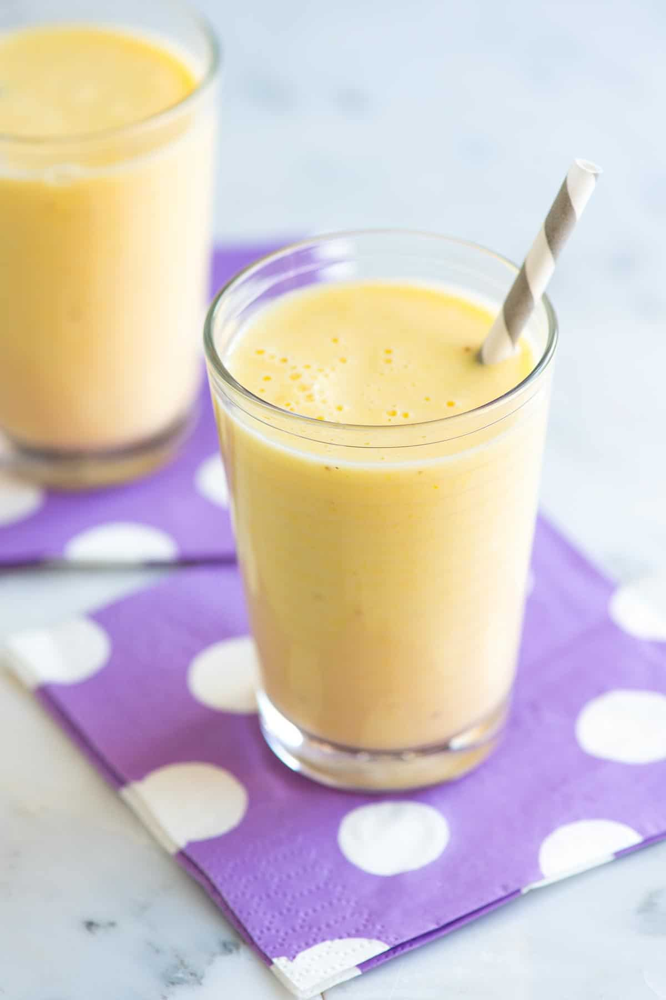

Research shows that one medium-sized banana provides roughly 13% of your daily manganese needs. Manganese helps your body make collagen and protects your skin and other cells against free radical damage.
A medium-sized banana will provides a sufficient amount of potassium, which meets about 10% of your daily potassium needs.
Potassium helps your body maintain a healthy heart and blood pressure. In addition, bananas are low in sodium. The low sodium and high potassium combination helps to control high blood pressure.
A medium banana will provide about 10-12% of your daily fibre needs. Bananas can help you beat gastrointestinal issues such as:
Fancy something sweet and healthy to start your day. This honey and banana smoothie will give you the kick you need and is a nourishing way to satisfy your sweet tooth.
Bananas are a fantastic source of energy due to the natural sugars they contain. These natural sugars have the additional benefit of energising you without increasing your cholesterol. The high levels of potassium in a banana help with your circulation and keep your heart strong – great for those of you who work out. Finally, the manganese in bananas will leave your skin youthful and glowing as they encourage your body to make collagen and protect your skin from damage.